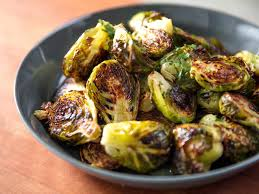

How to Make Roasted Brussel Sprouts

Ingredients:
- 1/2 lb brussel sprouts, sliced in half
- 2 tsp olive oil
- spices of your choice! I prefer garlic and onion powder, mushroom umami powder, and red pepper flakes.
Steps:
- Preheat the oven to 375 F.
- Toss pre-chopped brussel sprouts in olive oil and spice blend. Spread evenly on sheet pan.
- Bake for 30 minutes, tossing halfway through.
Pro Tip:
Preheat the sheet pan at 375 F for 10 minutes before adding the brussel sprouts. This will create a nice crispy bottom.